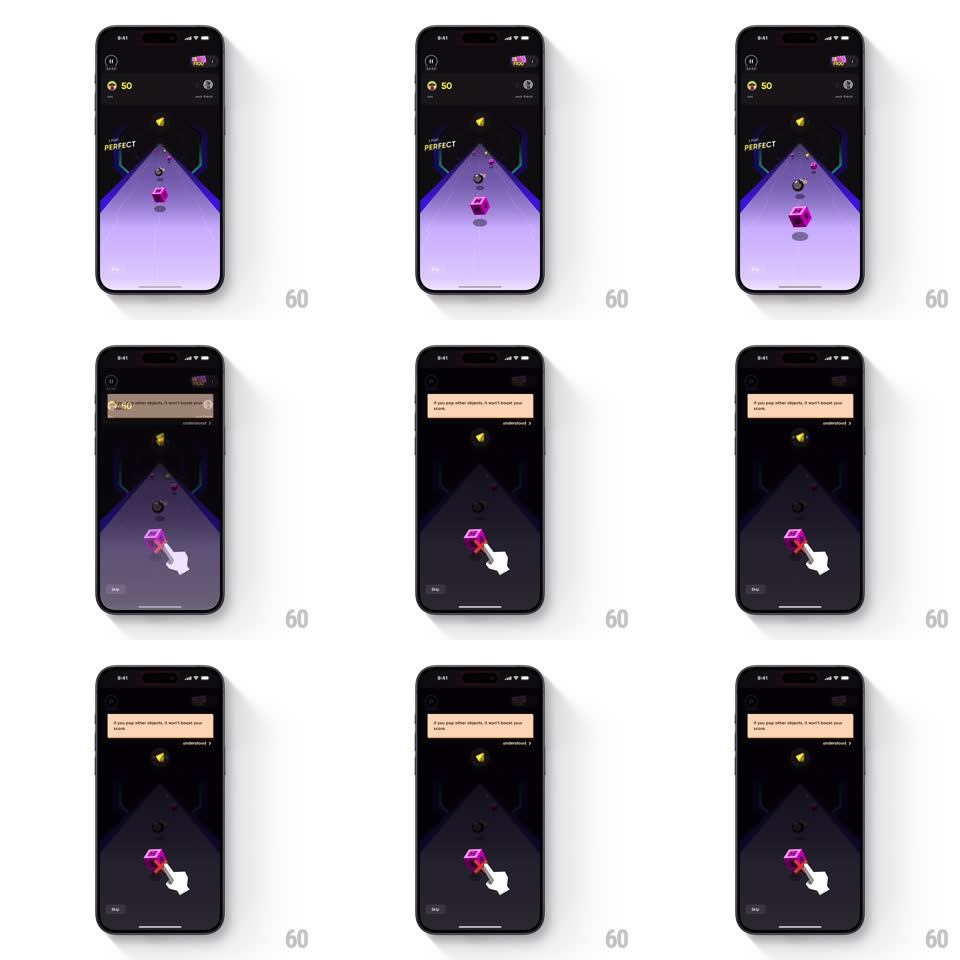

Media
Frame-by-frame

Rebuild this interaction 1:1: CRED Pop Challenge's wrong-pop coaching - after a "PERFECT" hit flash, when the player taps the wrong object, the game dims, a cream tooltip slides down explaining "if you pop other objects, it won't boost your score", and a hand cursor indicates the correct target until the player acknowledges with "understood".

Rebuild this interaction 1:1: CRED Pop Challenge's wrong-pop coaching - after a "PERFECT" hit flash, when the player taps the wrong object, the game dims, a cream tooltip slides down explaining "if you pop other objects, it won't boost your score", and a hand cursor indicates the correct target until the player acknowledges with "understood". ## Integration Integration: stack-agnostic spec - springs given as stiffness/damping, timed motions as duration + curve; map every value to your framework and animation library of choice. ## Scene Pop Challenge game screen mid-run (score "50" top-left, purple perspective track). A correct pop flashes a yellow "PERFECT" stamp. On the mistake: the whole game field dims to ~40%, the tooltip appears at the top with an "understood >" action, and the white hand cursor points at the right object. ## Motion spec Pattern: negative-feedback dim + coach tooltip. - Correct pop (setup): the target bursts and a bold "PERFECT" stamp scales in (0.5 -> 1.1 -> 1, spring ~340/18, ~300ms) and drifts up-fading (~500ms). - Wrong pop: gameplay pauses; a black scrim fades over the field (to ~60% opacity, 250ms). - Tooltip slides down from the top (350ms, ease-out) carrying the warning and an "understood >" button. - The hand cursor bounces on the correct object through the dim (same 700ms press loop) to re-teach the target. - Tap "understood": tooltip slides up, scrim fades out (250ms), play resumes. ## Calibration - Dim applies to the playfield only - score pill and tooltip stay full brightness. - No penalty animation on the wrong object itself; the teaching layer carries the feedback. ## Reduced motion Scrim and tooltip crossfade (200ms); stamp fades without spring. ## Don't miss - The tooltip for the wrong pop differs from the intro tooltip: warning copy + explicit "understood" acknowledgment. - Gameplay is truly paused under the scrim - objects stop moving.